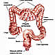
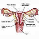
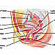
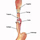
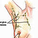
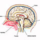
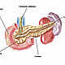
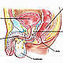
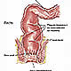
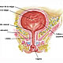

OncoGuía - Tipos de cáncer
-
 Adenoma de HipófisisGlándula situada en la silla turca
Adenoma de HipófisisGlándula situada en la silla turca -

ColonLa última porción del aparato digestivo
-

Cuello Uterino/Cérvixparte más inferior del aparato rep. femenino
-

Endometrio/úteroórgano hueco, situado en la pelvis.
-

Esófagotubo hueco que transporta los alimentos
-
 Estómagositúado en la parte alta del abdomen
Estómagositúado en la parte alta del abdomen -
 GliomasSe produce en el cerebro o en la médula espinal
GliomasSe produce en el cerebro o en la médula espinal -

MamaGlándula destinada a la producción de leche
-

MeningiomasTumor cerebral usualmente benigno
-

PáncreasGlándula que participa en el proceso de la digestión
-

PróstataGlándula sexual exclusiva de los varones
-

RectoLa última porción del aparato digestivo
-

Vejigaórgano situado en la parte baja de la pelvis
Cáncer de mama
Tratamiento
Generalmente el tratamiento que se realiza en primer lugar es la cirugía, salvo en tumores localmente avanzados, en los que se administra quimioterapia como primera modalidad terapéutica, con el fin de reducir el tumor y poder llevar a cabo una cirugía conservadora.
Cirugía
- Cirugía conservadora: Es la que se realiza con mayor frecuencia en la actualidad. Consiste en la extirpación del tumor con un margen de tejido sano y los ganglios axilares. Puede ser una tumorectomía (extirpación del tumor), o una cuadrantectomía (extirpación de un cuadrante). Este tipo de cirugía siempre se ha de complementar con radioterapia. Si la paciente necesita tratamiento farmacológico (quimioterapia), la radioterapia se realiza al finalizar el tratamiento sistémico.
- Mastectomía: Consiste en la extirpación de toda la mama y los ganglios axilares. En ocasiones es necesario un tratamiento con radioterapia tras la mastectomía, aunque esto ocurre en un porcentaje bajo de pacientes.
- Cirugía axilar: Independientemente del tipo de cirugía que se realice en la mama, es importante valorar si los ganglios de la axila están afectados por el tumor. Puede realizarse de dos formas: extirpando los ganglios axilares (linfadenectomía axilar) o bien, empleando la técnica de diagnóstico del ganglio centinela (preferible) que permite identificar el ganglio al que drena el tumor de la mama, y así, analizándolo, verificar si hay extensión a la axila.
Farmacología
En general, en el cáncer de mama, la quimioterapia se administra tras la cirugía como tratamiento complementario en aquellos casos con mayor riesgo de metástasis, con el objeto de prevenir su aparición (quimioterapia adyuvante). Los fármacos más empleados son los taxanos y las antraciclinas. Un 30% de los casos de cáncer de mama presentan una amplificación de un gen denominado HER2. Este subgrupo de pacientes se beneficia del tratamiento con Anticuerpos monoclonales.
En ocasiones, cuando el tumor está más avanzado localmente, la quimioterapia se administra como primer tratamiento, con la finalidad de disminuir el tamaño del tumor (quimioterapia neoadyuvante).
En la actualidad de forma sistemática se determina en el tejido tumoral la existencia o ausencia de receptores hormonales. Cuando son positivos, se añade al arsenal terapéutico el tratamiento hormonal.
Tratamiento con radiaciones
Desempeña un papel fundamental en el tratamiento de este tumor.
Se administra siempre en el caso de cirugía conservadora y, ocasionalmente, cuando se ha realizado una mastectomía. Hay que resaltar que la evolución tecnológica ha favorecido el desarrollo de técnicas cada vez más eficaces, precisas y con menos efectos secundarios en el tratamiento del cáncer de mama. Las técnicas que en la actualidad se utilizan para el tratamiento de este tumor son:
- Radioterapia 3D conformada: Se realiza la planificación empleando un TAC (Tomografía Axial Computerizada o scanner). Para administrar el tratamiento se utilizan aceleradores lineales. Generalmente, no es posible administrar una dosis homogénea, por lo que podría dar lugar a alteraciones en la piel.
Cuando es preciso irradiar la mama izda, con esta técnica el corazón puede recibir altas dosis de radiación, con lo que se podría incrementar el riesgo de enfermedad isquémica a largo plazo.
- Radioterapia con intensidad modulada de dosis (IMRT): Es una forma de radiación más avanzada que la radioterapia 3D. Consigue reducir las dosis sobre corazón, pulmón y piel, con lo que diminuye la toxicidad aguda y crónica.
- Radioterapia Guiada por Imagen –IGRT- Tomoterapia: Es el procedimiento más avanzado con alta tecnología que permite administrar un tratamiento de radioterapia helicoidal, altamente adaptado a cada paciente, que consigue reducir al máximo la dosis de radiación que llega a los órganos sanos vecinos mientras que el tumor recibe la dosis prescrita. La Tomoterapia incluye un sistema de TAC (scanner) que se realiza diariamente para conocer la posición exacta de la mama, de los órganos sanos y de la paciente. Con este TAC, se ajusta la posición de tratamiento y minimiza el riesgo de error de colocación. Los efectos secundarios derivados de este tratamiento son mínimos, por lo que la calidad de vida de la paciente, durante y tras el tratamiento son excelentes.
Con esta tecnología es posible realizar, en los casos en los que está indicado, tratamientos más cortos (Hipofraccionamiento), pasando de 6 semanas y media de duración total de tratamiento a tres o a una semana, dependiendo de cada caso.
Pronóstico
El desarrollo tecnológico de los últimos años y un mayor conocimiento de la biología del cáncer de mama ha permitido una mejora en el diagnóstico y tratamiento del mismo, lo que se traduce en un incremento de la supervivencia en la última década (64% para casos diagnosticados entre 1980 y 1985, y 78% para los diagnosticados entre 1990 y 1994), y se espera que esta tendencia continúe.
La supervivencia global por cáncer de mama en España se sitúa en torno al 78% a los 5 años tras el diagnóstico, por encima de la media europea que se sitúa en el 76%, y próxima a la de países muy desarrollados como Francia, Suecia, Suiza, Italia, o USA.
Aspecto Psico-Oncológico
La supervivencia y la calidad de vida del paciente con cáncer de mama han mejorado en la última década y la tendencia continua gracias a los avances en el conocimiento de la biología del cáncer, en las técnicas de diagnóstico (como el estudio del ganglio centinela) y en las alternativas terapéuticas.
Las reacciones emocionales de tristeza, inseguridad, preocupación y dudas ante el diagnóstico y los efectos secundarios de los tratamientos son normales y frecuentes. En el caso del cáncer de mama, los efectos psicológicos se centran en aspectos relacionados con la identidad, imagen y autoestima femeninas, dado que es un tumor que aparece en un órgano con una importante carga afectiva para la mujer, que como consecuencia de la enfermedad y de los tratamientos, puede sentirse menos atractiva y deseable, afectando a las relaciones de pareja y relaciones sexuales.
Sin embargo, las estrategias quirúrgicas actuales para el tratamiento del cáncer de mama han avanzado notablemente, realizándose cada vez con más frecuencia cirugías conservadoras o reconstrucciones inmediatas que disminuyen notablemente el impacto emocional en la mujer afectada.
El tratamiento integral y multidisciplinar, la comunicación y relación con el equipo sanitario, el apoyo de la familia, especialmente la comunicación sincera y abierta con la pareja, y del entorno social facilitará la aceptación y afrontamiento de la enfermedad.
Si necesita más información sobre cómo afrontar un diagnóstico de un cáncer de cuello de útero, le ofrecemos unas pautas que le podrán ayudar a asumir y a adaptarse a la nueva situación. Puede consultarlas en el apartado de Apoyo Psicológico. Asimismo, si quiere conocer las experiencias y testimonios de personas que han superado esta enfermedad puede consultar en Curados de cáncer.